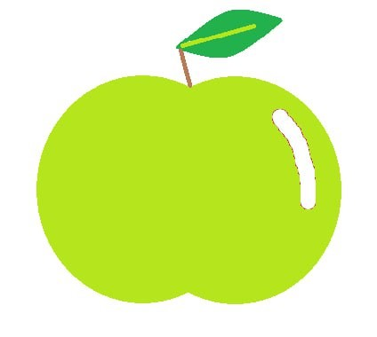

Яблуневі сади України
Регіони України багаті на яблуневі сади, де вирощують найкращі сорти яблук для внутрішнього ринку та експорту. Від півдня до півночі країни, яблуневі сади розташовані в різних кліматичних умовах, що дозволяє отримувати плоди з унікальними смаковими якостями. Наприклад, в Херсонській області вирощують солодкі та соковиті сорти, такі як "Голден Делішес" і "Фуджі", які користуються популярністю не тільки в Україні, але й за кордоном. У Вінницькій області, відомій своїми яблучними садами, фермери вирощують різноманітні сорти, які ідеально підходять для виготовлення соку, компотів та інших продуктів. Завдяки сучасним агрономічним практикам та використанню новітніх технологій, українські садівники забезпечують високий рівень якості своїх продуктів. Яблука з України експортуються в багато країн світу, завойовуючи визнання завдяки своєму смаку, свіжості та натуральності. Ця галузь постійно розвивається, що робить українські яблука важливим сегментом аграрного ринку.
